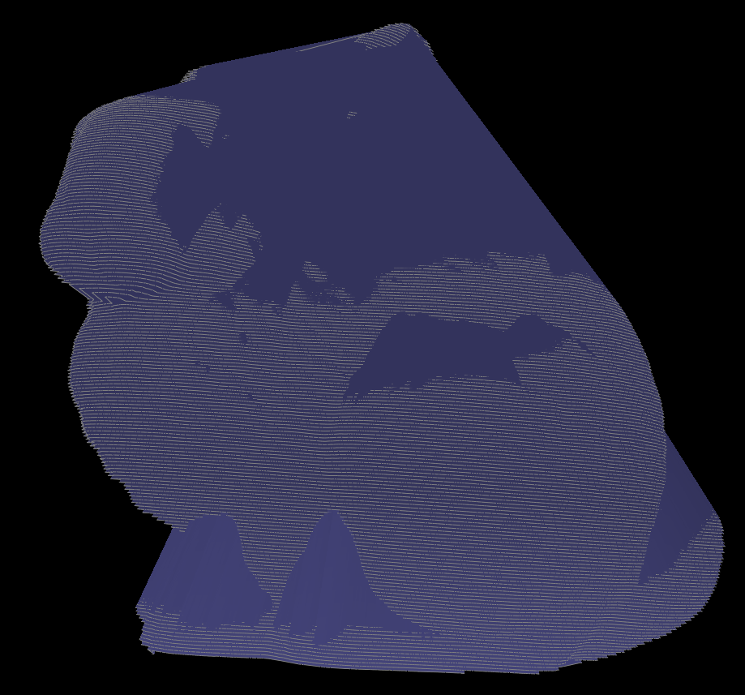
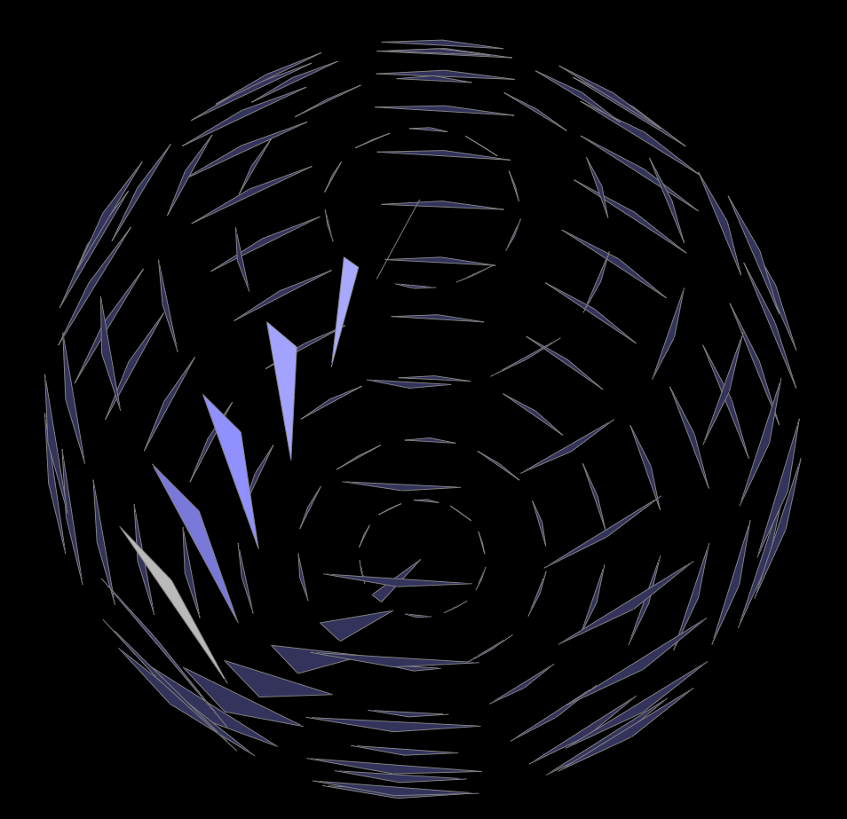
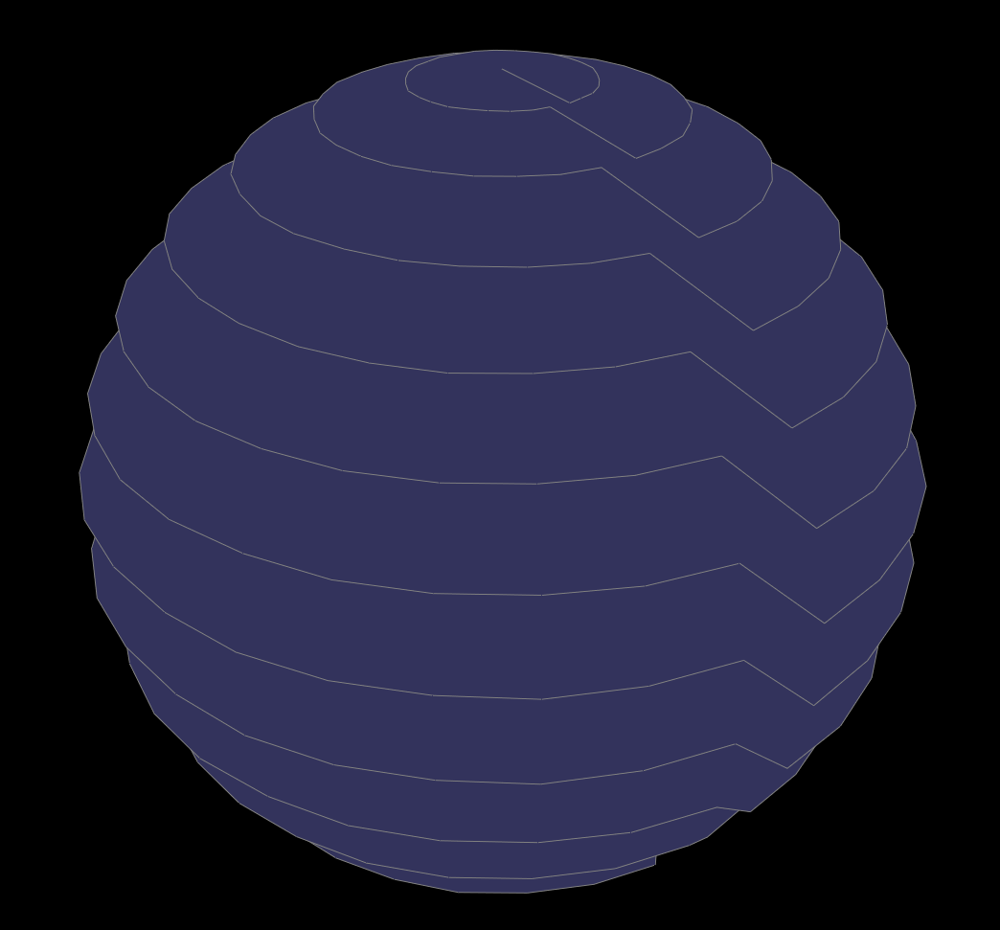
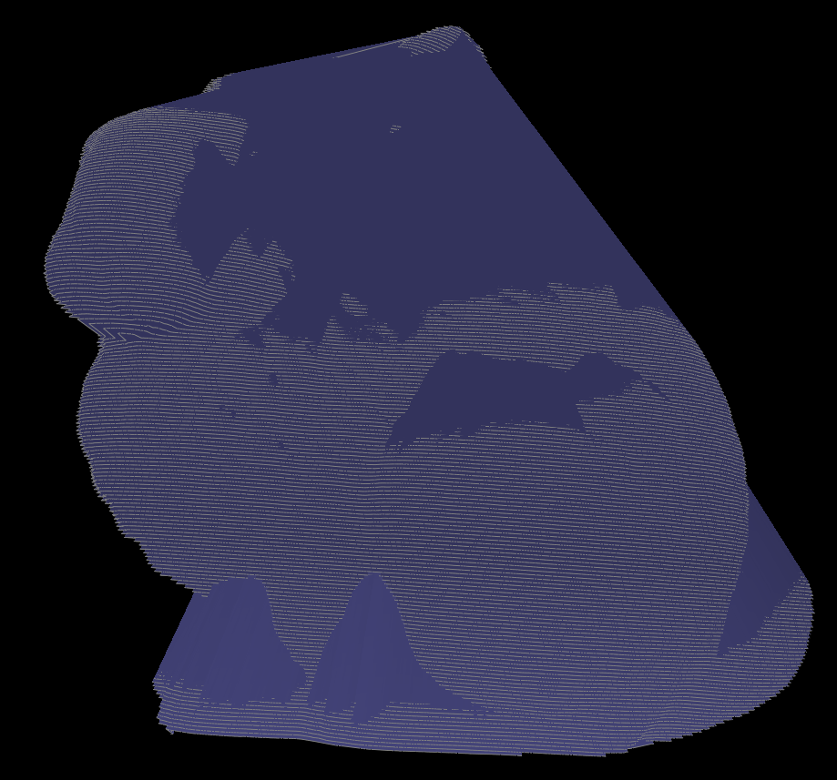

|

|
So we've met our goal of being able to take a ply file and load into the existing MeshEdit structure and we are currently producing an extremely naive implementation of converting the point cloud to a mesh.
The first step we had to take was being able to parse the ply files. We did this using the RPly library suggested by the previous years point cloud to mesh group.
From here, we simple had a file that contained the number of vertices and every line after that contained the x,y, and z coordinates of the vertex. We then created another parser in the collada.h
file that took these vertices, normalized their positions, and pushed them into the scene. Of course, MeshEdit doesn't really render individual vertices so we just went straight to trying to convert the points into a mesh because we don't have time to figure out a good way to render the points in OpenGl.
Next we worked on tried a couple ways to make this more like a point cloud, and we found the best way was to link 3 consecutive points with some added entropy.
Our first naive implementation is simply connecting the polygons together in sequence. While the results are almost certainly not good for a final result, we're pretty happy where we are, as we're still on pace with our goals set.
Next steps are basically just getting the Ball Pivot Algorithm to work at this point, and hopefully being able to then work on some of our stretch goals afterwards.
|

|

|
|
|

|
The slides can be viewed here and this is the link to our Youtube video: https://youtu.be/CYN6ynNkU6E.
The goal of our project is going to be convert point cloud meshes (in the ply format) to meshes(in the dae) format.
3D scanners normally output data in the form of a point cloud, which is useful for many different applications in industry such as CAD modeling. Converting these point clouds to meshes is a problem worth solving because it gives us greater geometric data with which we can use algorithms for ray tracing, collision detection, or and rigid-body dynamics on the constructed mesh. This is definitely a challenging problem given the huge space of the problem. Point clouds can contain thousands of points, how are we supposed to connect these algorithmically in an efficient but also correct manner. The large number of points to connect to allows for the creation of undesirable meshes with unbalanced polygons. Some post processing may be necessary. We are looking to use the ball pivot algorithm in order to build the mesh, with perhaps using Poisson reconstruction as a stretch goal. Aside from that some other extensions we were looking at for this project include preprocessing for the point cloud, getting BRDF values with flash/no flash and assign them to a material, creation of STL files from the mesh so that it may be 3D printed and so on.
A working implementation of the Ball Pivot algorithm (BPA) using the MeshEdit project as base so that we have a working foundation for HalfEdge. We would like to deliver images of the final constructed mesh as well as a video or gif of the construction process.
An implementation of Poisson construction which would have similar deliverables as the BPA, and we would also produce comparison images and times between the two algorithms on different point cloud inputs
Post processing of the constructed mesh, we would likely produce comparison images of the mesh before and after processing
Producing BRDF values and then using our raytracer to render the image
Picture to point cloud, deliverables would just be ply files and the images from which we produced them
Creation of STL files from meshes so that we can 3D print some of this stuff
We do recognize that is definitely going to be impossible to do any more than 1 or 2 or these stretch goals, these are mostly just listed as possibilities that we would like to investigate further
Be able to load point cloud into MeshEdit, be able to produce point cloud in GUI from an input ply file.
Naive mesh generated from the points that were read in, not necessarily a full implemenation of Ball Pivot algorithm
Get a full working implementation of BPA
Reserved for one of the stretch, likely picture to point cloud
This is honestly a very conservative estimate for what we hope to accomplish with this project. Ideally we'd like to get a full working implementation of BPA sooner, probably around week 2. This would give us more time to dedicate to one or more of our stretch goals.
We would use the The Stanford 3D Scanning Repository as a place to get our initial point clouds from. We would use these two papers here and here to implement BPA and Poisson reconstruction. We'd use these videos (here and here) as starting points for generating a point cloud from several pictures taken. Should we decide to work on more of the other stretch goals, we'll like find our resources for those ideas as well.
We will be developing using C++ on either OS X or Ubuntu using the MeshEdit code from Project 2/3.